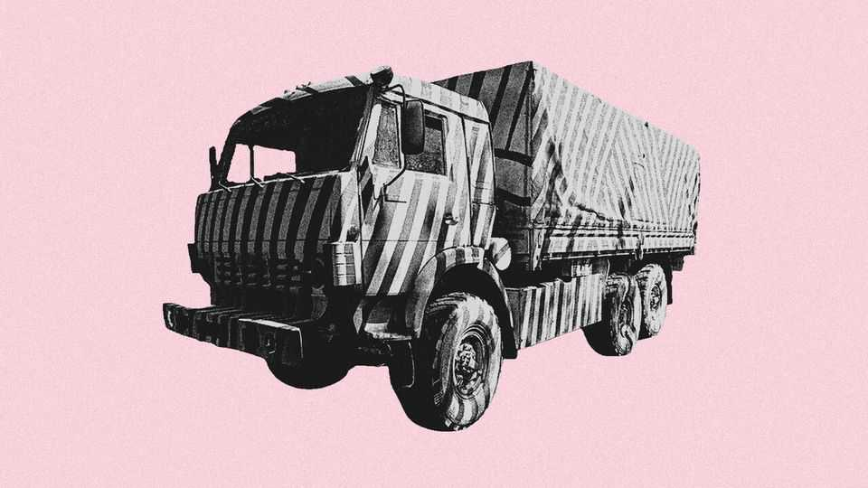

How to hide from killer drones
In the Ukraine war, anti-AI tactics are producing bizarre forms of camouflage
July 9th 2026

IN RECENT MONTHS Russian military lorries in Ukraine have begun sporting a striking new colour scheme of vivid black-and-white stripes. As camouflage goes, it is not much use against human observers. But then, it is not intended to fool biological eyes. Its aim is to frustrate the machine-vision systems that are fitted to the Ukrainian drones that zip around battlefields looking for prey.
The stripes are reminiscent of the “dazzle camouflage” used by the Royal Navy in the first world war. But whereas dazzle camouflage was intended to break up a ship’s silhouette, making it difficult to judge its speed and heading, the new variant aims to fool machines into thinking that a lorry is not, in fact, a lorry at all.
Machine vision is based on pattern-matching. A model is trained by exposing it to images, some of which contain lorries (or tanks, or aircraft) and some of which do not. Over zillions of exposures, the computer deduces rules that allow it to identify the things its trainers want to teach it about. Because zebra-striped trucks are unlikely to appear in the training data, says Todd Humphreys, an engineer at the University of Texas at Austin, an AI that encounters one in the real world may not realise what it is looking at.
Computers often rely on very specific features to recognise an object. That leads to a problem known as “brittleness”, in which small variations can cause bizarre misclassifications. “Adversarial examples” designed to exploit the quirks of computer vision, have been around for years. One, developed at the Massachusetts Institute of Technology in 2017, featured a plastic turtle. Misled by the pattern on its shell, a computer confidently classified it as a rifle. In another project, researchers produced stickers which, when attached to roads, caused a Tesla’s self-driving software to steer into oncoming traffic.
Dr Humphreys says that efforts to counter machine vision in the Ukraine conflict work on the same principle, obscuring expected features with unexpected ones. Parked Russian aircraft have been seen with rows of old tyres on their wings to confuse image-matching software on drones. Some Russian drones also now have dazzle camouflage of their own, presumably to make it harder for Ukrainian interceptor drones to identify them.
These tactics are likely to become more common. Presently most battlefield drones are still flown by a remote human operator, who is unlikely to be fooled by the markings. But as the drones proliferate—Ukraine aims to produce 10m this year—and technology improves, AI will take on more of the work.
The probable result will be an arms race pitting increasingly sophisticated machine vision systems against cleverer and cleverer methods for fooling them. The advantage from any particular camouflage pattern is likely to be temporary. After all, once zebra-striped lorries are common enough they will start to turn up in training data, and models will start to see them for what they really are. A spokesman for Brave1, an arm of the Ukranian government that aims to accelerate military technology, acknowledged that the Russians were adapting—but said Ukraine was adapting faster. ■
Curious about the world? To enjoy our mind-expanding science coverage, sign up to Simply Science, our weekly subscriber-only newsletter.